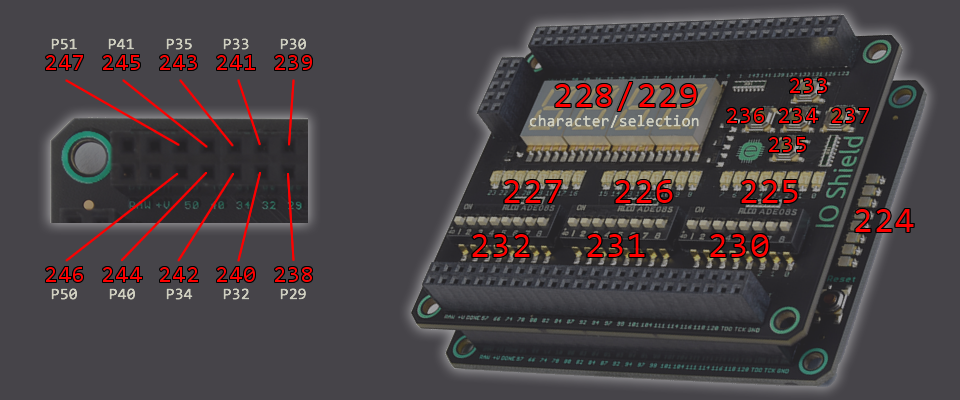
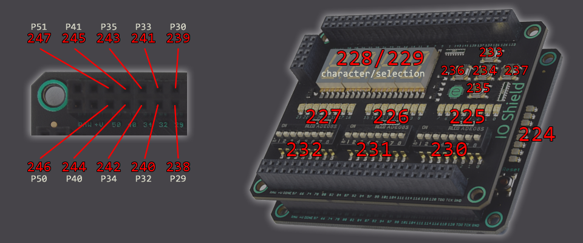

Memory-mapped IO
A processor core reads and writes data to external devices by utilizing an 8-bit address space.
Bytes 0 to 223 are mapped to the block memory module that is instantiated for each core (cores within
the same group share a single block memory module). Bytes 224 to 255 are user-configurable and can be mapped
to any one of the available IO pins on the FPGA board.
For more information on how to read/write data to external devices, see the Instruction Set section regarding the IN/OUT operations.
The xT50 assembly and Tranquil languages use different syntax for configuring memory-mapped IO addresses. See their respective documentation for more details.
Example of a memory-mapped IO design using the Mojo v3 board with IO Shield:

For more information on how to read/write data to external devices, see the Instruction Set section regarding the IN/OUT operations.
The xT50 assembly and Tranquil languages use different syntax for configuring memory-mapped IO addresses. See their respective documentation for more details.
Example of a memory-mapped IO design using the Mojo v3 board with IO Shield:
